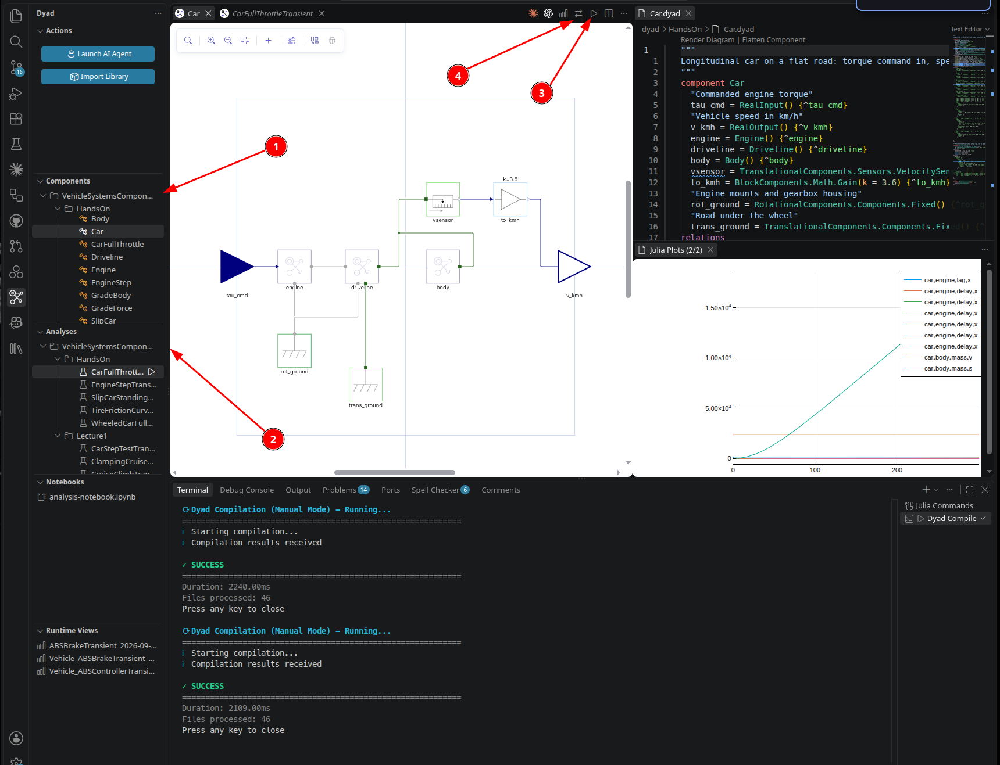
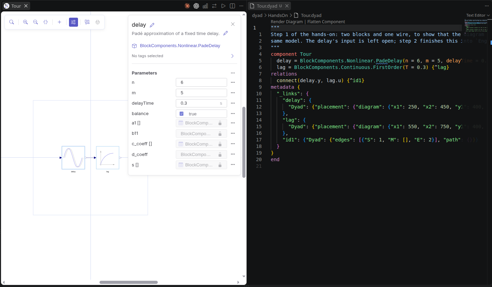
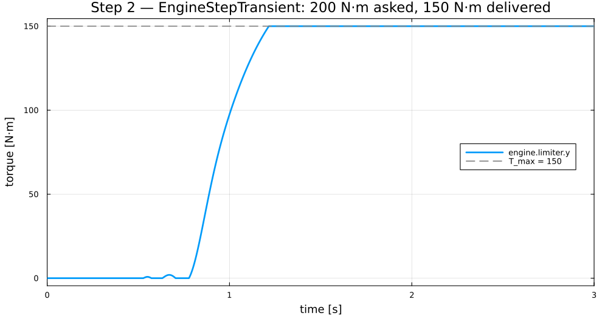
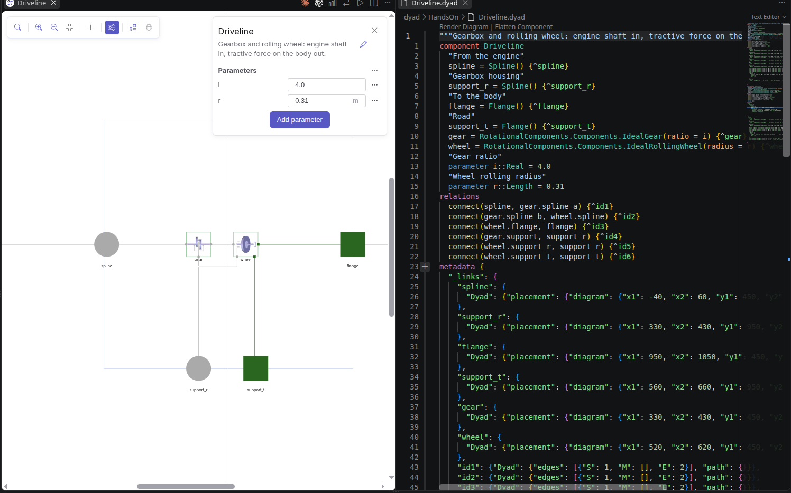
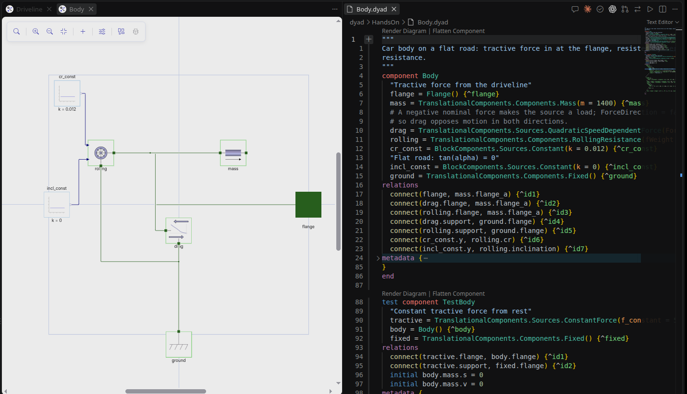
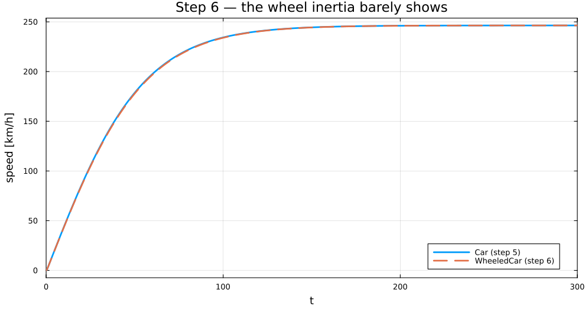
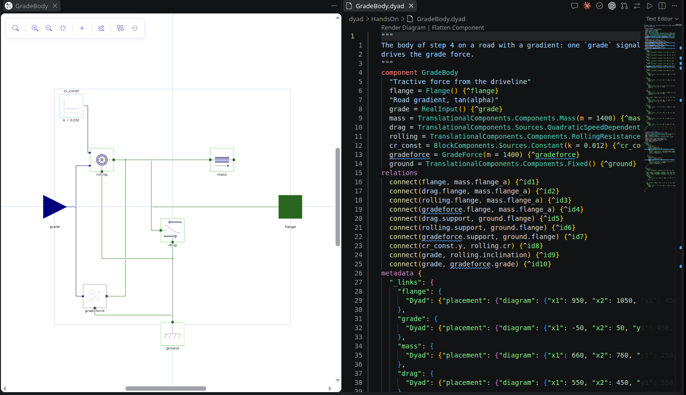
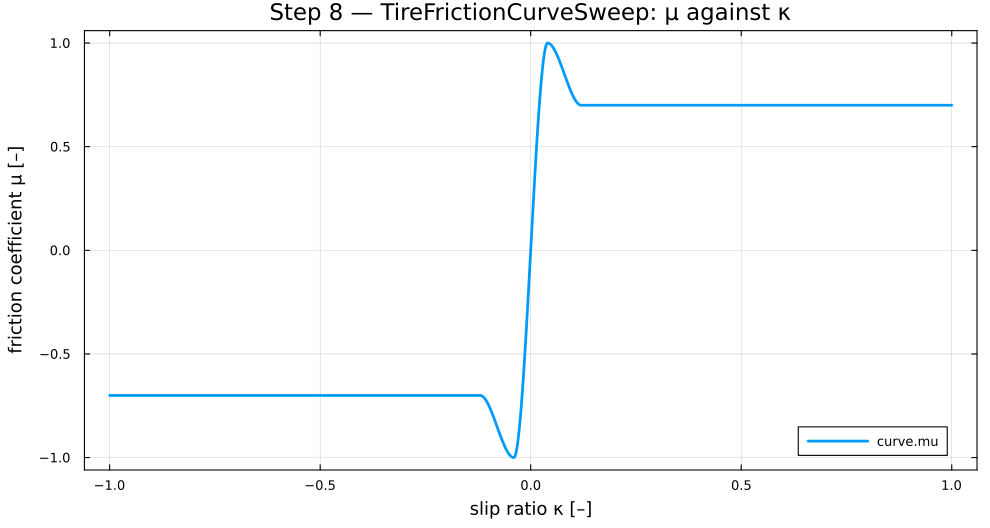
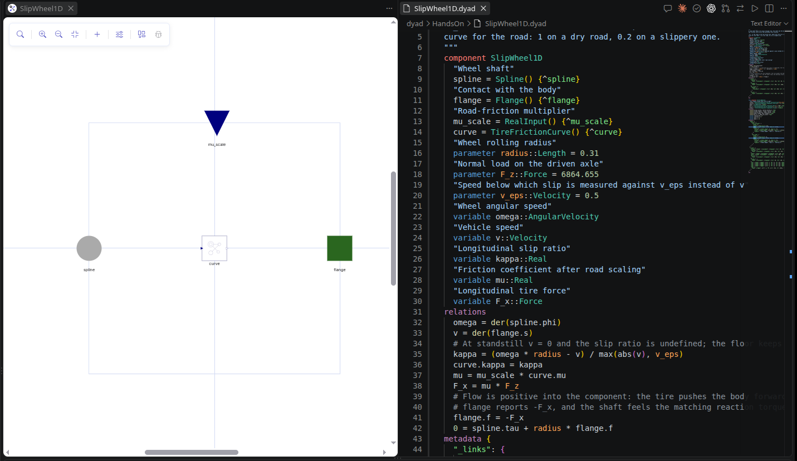
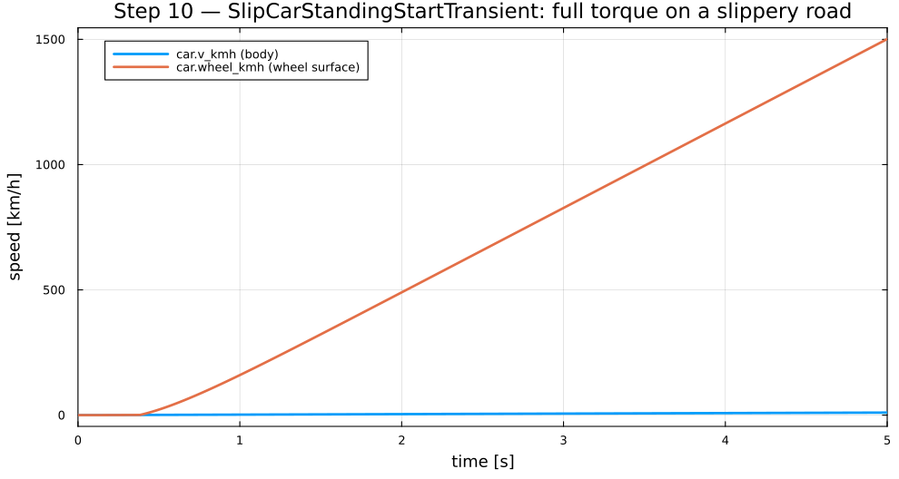

Build the car in Dyad
Lecture 1 hands-on
Vehicle Systems & Components
From an empty library to a wheel spinning on a slippery road.
S speaker view · C cue panel · O overview · ← → steps · ↑ ↓ within a step
Today
| # | Step | Min | You end with |
|---|---|---|---|
| — | Dyad Studio and your library | 20 | an empty MyCar library |
| 01 | Tour | 10 | two blocks, one wire, two views |
| 02 | Engine | 20 | torque with a delay, a lag and a ceiling |
| 03 | Driveline | 10 | gear and rolling wheel |
| 04 | Body | 15 | mass, drag, rolling resistance |
| 05 | Car | 20 | 246 km/h flat out — the notebook's number |
| 06 | Wheel inertia | 10 | a spinning wheel that barely matters |
| 07 | Grade | 10 | your first equation |
| 08 | Tire curve | 15 | grip against slip |
| 09 | Slip wheel | 15 | a wheel that can spin |
| 10 | Standing start | 10 | wheelspin on ice |
Three ideas before you click anything
- A library is a folder.
dyad/holds your.dyadfiles;generated/is the Julia the extension writes from them — never edit it. - Component = what the system is. Parts, wires, equations.
- Analysis = what to do with it. "Simulate this for 300 s."
- Diagram and code are one file. A block is a line; a wire is a
connect.
Page: What you are looking at
Where things are

Adding a part

- + (Add component) in the diagram toolbar.
- Search by name —
PadeDelay— or walk the path the parts table gives:BlockComponents › Nonlinear › PadeDelay. Dyadholds the ports:RealInput,Spline,Flange.- Your own library is at the bottom — that is where your
Enginewill appear when the car needs it. - The sliders button: Edit Parameters.
Create your library
- Ctrl+Shift+P → Dyad: Create Component
Library → name it
MyCar, pick an empty folder. - Wait: the extension runs
Pkg.instantiate()by itself. The first time it downloads and precompiles the standard libraries — minutes, not seconds. - Dyad sidebar → Components:
MyCaris there.
MyCar is in the
Components panel.
Page: Create your library
Step 01 · 10 min
One model, two views
Place two blocks, wire them, set a parameter — then see the same three facts as code.
What you are building

delay (PadeDelay: n = 6, m = 5, delayTime = 0.3) → lag
(FirstOrder: T = 0.3), one wire delay.y → lag.u⇄ — the same three facts
component Engine
delay = BlockComponents.Nonlinear.PadeDelay(n = 6, m = 5, delayTime = 0.3)
lag = BlockComponents.Continuous.FirstOrder(T = 0.3)
relations
connect(delay.y, lag.u)
end- Every block is a line
name = Library.Path(parameters). - Every wire is a
connectunderrelations. - Change
T = 0.3to0.5here, toggle back: the panel shows 0.5.
Step 02 · 20 min
Engine
Torque command in, shaft torque out — late, slow, and never more than 150 N·m.
Finish the chain, then build a bench
Parameters theta_e = 0.3 (structural), tau_e = 0.3,
T_max = 150 — the parts use the names.
tau_cmd → delay → lag →
limiter (y_max = T_max, y_min = 0) → torque →
spline; torque.support → support.
Bench EngineStep: a Step of 200 N·m at
0.5 s into your Engine, a 1 kg·m² Inertia on the shaft,
the mounts Fixed.

The analysis is code
component EngineStep
cmd = BlockComponents.Sources.Step(height = 200, offset = 0, start_time = 0.5)
engine = Engine()
"Unit inertia, so its angular acceleration reads as the delivered torque"
load = RotationalComponents.Components.Inertia(J = 1)
mounts = RotationalComponents.Components.Fixed()
relations
connect(cmd.y, engine.tau_cmd)
connect(engine.spline, load.spline_a)
connect(engine.support, mounts.spline)
initial engine.lag.x = 0
initial load.phi = 0
initial load.w = 0
end
analysis EngineStepTransient
extends TransientAnalysis(stop = 3)
model = EngineStep()
endSave → EngineStepTransient appears in Analyses → ▷.
Plot one signal, not all of them
using MyCar, Plots
r = MyCar.EngineStepTransient()
plot(r; idxs = r."engine.limiter.y")
Step 03 · 10 min
Driveline
Shaft torque in, force on the car out: F = T · i / r.
Gear, rolling wheel, four ports

i = 4.0, r = 0.31 · gear IdealGear(ratio = i) → wheel IdealRollingWheel(radius = r) ·
gray circles are rotational ports, green squares translationalStep 04 · 15 min
Body
1400 kg, and the two forces that hold it back on a flat road.
Mass, drag, rolling resistance

The one parameter that bites
parameter m::Dyad.Mass = 1400
parameter CdA::Area = 0.63
parameter rho::Density = 1.2
parameter v_nominal::Velocity = 30
…
drag = QuadraticSpeedDependentForce(ForceDirection = false,
v_nominal = v_nominal, f_nominal = -0.5 * rho * CdA * v_nominal ^ 2)
rolling = RollingResistance(fWeight = m * g)- Each value is a parameter of
Body; the parts use the names. f_nominalis ½ρCdA·v² at the nominal speed.- Negative makes the source a load rather than a push.
ForceDirection = falsemakes it oppose motion both ways.
Step 05 · 20 min
Car: full throttle to terminal speed
Your three components, assembled — and the same 246 km/h the notebook shows.
Assemble from your own library

Engine, Driveline, Body from + → MyCar ·
VelocitySensor → Gain(k = 3.6) → v_kmh · two groundsBench, analysis, run
component CarFullThrottle
"Full throttle: the engine's 150 N·m ceiling"
cmd = BlockComponents.Sources.Constant(k = 150)
car = Car()
relations
connect(cmd.y, car.tau_cmd)
initial car.body.mass.s = 0
initial car.body.mass.v = 0
initial car.engine.lag.x = 0
end
analysis CarFullThrottleTransient
extends TransientAnalysis(stop = 300)
model = CarFullThrottle()
end246 km/h — the notebook's car
using MyCar, Plots
r = MyCar.CarFullThrottleTransient()
plot(r; idxs = r."car.v_kmh")
Step 06 · 10 min
A wheel with inertia
A 1 kg·m² wheel between gear and road — and how little it changes.
Duplicate, insert, compare

inertia Inertia(J = J_w), new parameter J_w = 1.0using MyCar, Plots
a = MyCar.CarFullThrottleTransient()
b = MyCar.WheeledCarFullThrottleTransient()
p = plot(a; idxs = a."car.v_kmh", label = "Car")
plot!(p, b; idxs = b."car.v_kmh", label = "WheeledCar")J / r² ≈ 10 kg

Step 07 · 10 min
A road with a gradient
Your first equation: the pull of gravity along the slope.
One equation
component GradeForce
extends TranslationalComponents.Interfaces.PartialForce
grade = RealInput()
parameter m::Dyad.Mass = 1400
parameter g::Acceleration = 9.80665
relations
f = m * g * sin(atan(grade))
end- Add Component, then ⇄ — an equation has no diagram form.
extends PartialForcebrings the ports andf; you write only whatfis.gradeis tan α — the same conventionRollingResistanceuses, so one signal drives both.
Give the body a grade input

Body → GradeBody · delete incl_const ·
one grade input into rolling.inclination and gradeforce.grade ·
GradeForce(m = m, g = g)Step 08 · 15 min
Tire friction against slip
Grip peaks at 4 % slip and falls once the tire slides.
κ in, μ out
- Rises to μA = 1.0 at κ = 0.04 (adhesion).
- Falls to μS = 0.7 beyond κ = 0.12 (sliding).
- Each segment is a cubic with zero slope at its ends — no corners for the solver.
- Point-symmetric: braking slip gives negative friction.
using MyCar, Plots
r = MyCar.TireFrictionCurveSweep()
plot(r; idxs = (r."curve.kappa", r."curve.mu"))
Step 09 · 15 min
A wheel that can slip
Cut the rolling constraint: wheel and car may now move at different speeds.
Slip, grip, force
kappa = (omega * radius - v) / max(abs(v), v_eps)
curve.kappa = kappa
mu = mu_scale * curve.mu
F_x = mu * F_z
flange.f = -F_x
0 = spline.tau + radius * flange.fv_epskeeps κ finite at standstill.mu_scaleis the road: 1 dry, 0.2 slippery.- Flow is positive into a component: a tire pushing the car forward reports
flange.f = -F_x.
What you are building

Step 10 · 10 min
Standing start on a slippery road
Floor it on ice: the wheel spins, the car barely moves.
Two speeds out

v_kmh from the body · wheel_kmh from the wheel shaft,
× r × 3.6 · tire radius = r, F_z = m * g / 2 · bench: cmd 150, road 0, friction 0.21500 km/h at the tire, 10 km/h on the road
using MyCar, Plots
r = MyCar.SlipCarStandingStartTransient()
plot(r; idxs = [r."car.v_kmh", r."car.wheel_kmh"])
dry = MyCar.SlipCarStandingStartTransient(
model = MyCar.SlipCarStandingStart(
name = :SlipCarStandingStart, friction__k = 1.0))
plot(dry; idxs = [dry."car.v_kmh", dry."car.wheel_kmh"])